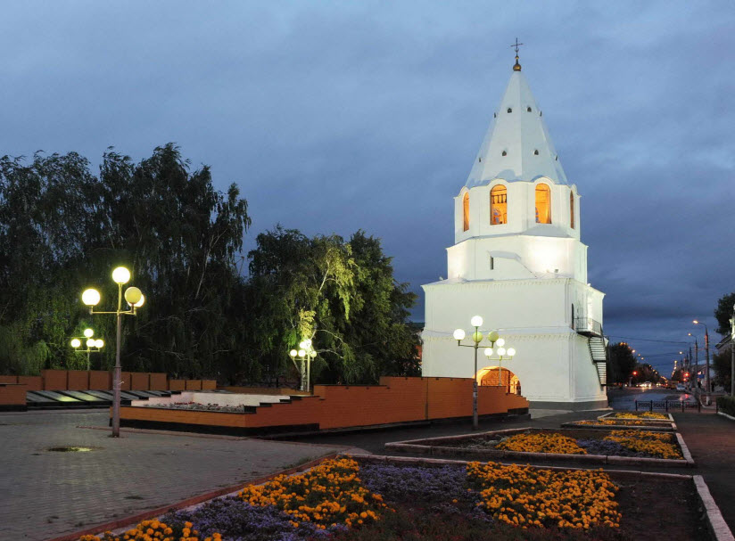
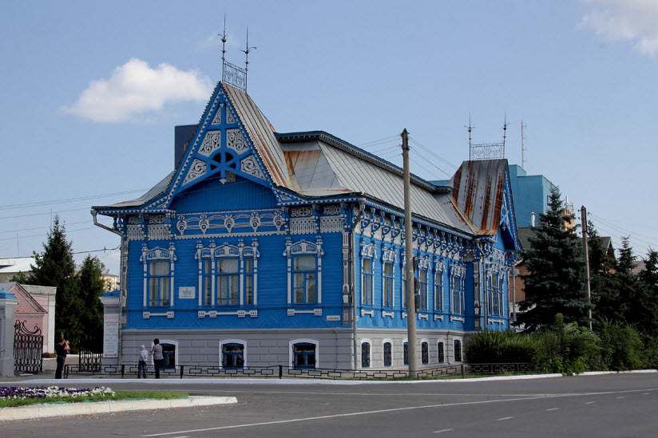

1.Сызранский кремль
Строение, которое положило начало городу, сегодня практически не сохранилось. От Кремля, построенного Григорием Козловским в междуречье Сызранки и Крымзы, осталась лишь одна Спасская башня, ранее бывшая воротной. Полагают, что она сохранилась только потому, что была каменной – в отличие от остальных.
Строительство Кремля в Сызрани пришлось на то время, когда Россия больше всего нуждалась в защите торговых путей. Тогда-то по всей стране и стали возникать города-крепости. Сызрань строилась по приказу императора Петра Алексеевича в 1683 г. Основание Кремля было заложено на самом возвышенном месте. Строение имело 4 деревянных башни (хотя в разных источниках указывается, что 7) и одну каменную, было окружено рвом и насыпным валом. По своему прямому назначению, для отражения атак противника, строение использовалась лишь однажды — во время Пугачевского восстания. Башня, которая носит имя Спасской, признана архитектурно-историческим памятником федерального значения в городе. Одно время в ней располагалась Церковь во имя Спаса Нерукотворного, для чего ее слегка переделали. Сегодня в Спасской башне находится филиал музея Сызранского Кремля.
Башня, которая носит имя Спасской, признана архитектурно-историческим памятником федерального значения в городе. Одно время в ней располагалась Церковь во имя Спаса Нерукотворного, для чего ее слегка переделали. Сегодня в Спасской башне находится филиал музея Сызранского Кремля.

2.Дом Чернухина. Городской выставочный зал
Мартиниан Чернухин, занимавший пост главы города с 1902 по 1917 гг., заслужил уважение горожан и оставил о себе добрую память. Он активно участвовал в восстановлении Сызрани после пожара, при нем строились многие общественные здания. Особняк, который Чернухин строил для своей семьи в течение 2 лет, сегодня признан памятником архитектуры федерального значения.
В голубой терем под шатровой крышей неподалеку от набережной невозможно не влюбиться. На него словно накинут флер таинственности. Резные наличники и кружевные карнизы переносят в то время, когда в моде было прекрасное и возвышенное. Следуя своему предназначению, имение, в котором сейчас располагается Городской выставочный зал, словно островок красоты посреди суровой действительности.
Галерея открыта круглогодично. Здесь проходят выставки и вернисажи как местных мастеров, так и передвижные.

3.Сызранский краеведческий музей
Музей начинался с уездной выставки сельского хозяйства и промышленности – по инициативе Николая Гурьева, историка-любителя и председателя статистического бюро. В 1925 г. музей получил свое здание, а фонды пополнились предметами, которые перевезли из окрестных купеческих усадеб Насакиных, Гагариных, Орловых-Давыдовых.
Позже коллекция пополнилась картинами Шишкина, Айвазовского, Саврасова, которые положили начало художественному отделу, и ископаемыми, найденными при археологических раскопках в окрестностях Сызрани.
В 60-е гг., в связи с увеличением фондов, открыты филиалы музея в особняке Чернухина и Спасской башне Сызранского кремля. Сегодня это и музей, и научно-исследовательский центр. Фонд насчитывает более 50000 экспонатов, среди которых предметы быта и искусства, архивная документация, исторические, книжные и информационные материалы.
4.Поляна колдунов
У поселка Передовое находится еще одно место, окутанное мифами и легендами – это поляна с валунами разного размера, оставленными ледником. Причудливая форма камней объясняется выветриванием, но люди склонны верить мистической версии их появления. Так, о самом необычном из них, называемом Чертов Палец, ходит легенда, что он помогает людям с черной душой и помыслами.
Сама ж поляна когда-то была местом сбора колдунов и разбойников, и даже человеческих жертвоприношений. Очевидцы утверждают, что с наступлением темноты камни начинают подмигивать красным и зеленым цветом и верят, что это не упокоенные души. Другие утверждают, что шары, прилетающие из Рачинского леса, приземляются именно здесь. Правда это или нет – неизвестно, но даже ученые стараются обходить эти места стороной.
5.Усадьба Сыромятниковых
Особняк в два этажа по улице Советской называют «Дом с эркером». Сегодня в нем располагается один из корпусов колледжа искусств и культуры им. Носцовой. Это еще одно здание Старой Сызрани, в котором наблюдается смешение стилей эклектики и модерна.
Строение построено в 1910 г. купцом I гильдии Афонтием Сыромятниковым для своих детей — Надежды и Астия. Дом выглядел очень необычно для того времени, однако хозяина это не волновало. Афонтий Григорьевич на торговле мукой сделал капитал в 170000 рублей и мог позволить себе любой каприз.
Строился особняк по индивидуальному проекту. Домов такого типа в Сызрани, да и в ближайших городах Самарской области, больше нет. Похожие можно увидеть только в Казани. Среди отличительных особенностей можно выделить низкий цоколь, не характерный для архитектуры того времени, античные колонны и сам эркер, накрытый чешуйчатой аркой.
После революции здание усадьбы было передано муниципалитету и в 1918 г. в нем разместился Городской окружной суд. Позже сооружение отдали Колледжу искусств, который и располагается в нем в настоящее время.